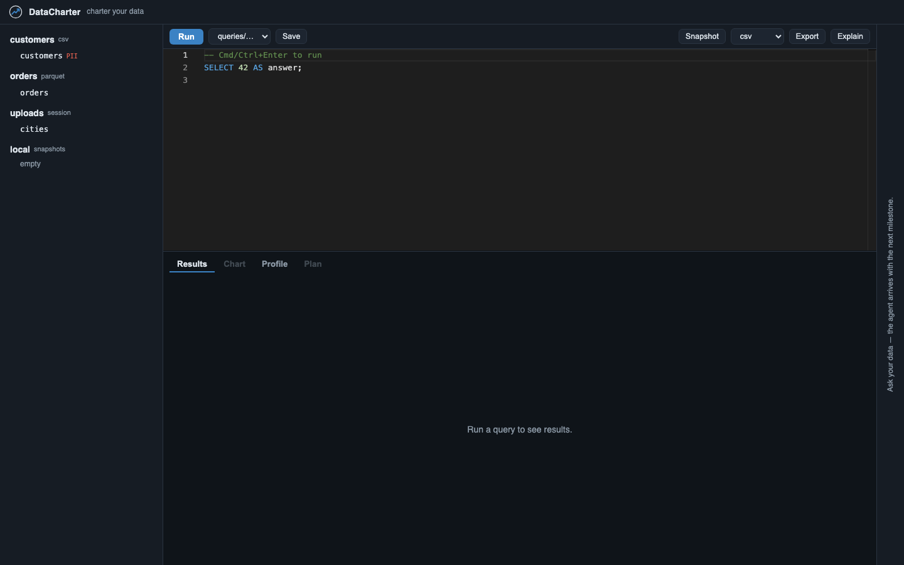

Open source · Apache-2.0 · runs entirely on your machine
One SQL workspace over every file and database you have, federated by DuckDB and governed by a contract. An AI agent sees exactly what the charter grants it, and not one column more.
No cloud, no telemetry, no API key required: the chat agent can run on your Claude Code subscription or a fully local model.
| namePII | emailPII | region | amount |
|---|---|---|---|
| Ada Moreno••• | ada@volt.dev••• | EU | 1,204.50 |
| Grace Okafor••• | grace@arc.io••• | US | 986.00 |
| Kat Jensen••• | kat@lumen.co••• | US | 2,410.75 |
| Lin Chen••• | lin@delta.sh••• | APAC | 1,877.25 |
§1 · Federate
A local CSV, a Postgres table, and a Parquet file on S3: joined in one SQL statement, on your laptop. Filters and projections are pushed down to each source, so every leg of a cross-source join is filtered where its data lives.
SELECT c.region, sum(o.amount) AS revenue FROM 'leads.csv' l -- local file JOIN crm.customers c -- Postgres ON c.email = l.email JOIN sales.orders o -- Parquet on S3 ON o.customer_id = c.id GROUP BY 1 ORDER BY 2 DESC;
charter.yaml.§2 · Govern
charter.yaml is the same ODCS-style contract your data team already writes: sources, tables, PII. DataCharter is what makes it enforceable, for humans and agents alike.
sources: crm: type: postgres tables: customers: pii: [email, phone] # masked for agents by default agent_access: crm: customers: email: deny # not one column more row_filters: orders: "region = 'US'" # the rows an agent may see
Declared and detected PII comes back masked (•••) unless you grant it, per source, table, or column.
Predicates from the charter are applied to any query an agent runs: fail-closed, composed with masking.
A masked column can't be used in WHERE, JOIN, or ORDER BY to reconstruct values. The guard reads the whole query tree.
Flip Agent view on any result and see, column by column, exactly what the model receives.
§3 · Serve agents
The built-in chat agent and the MCP server share one governed surface. Chat in the UI, or wire your workspace into Claude Code, Claude Desktop, Cursor, Cline, or Gemini CLI. Listed in the official MCP Registry.
The data sources the charter declares, with their types.
read-onlyEvery queryable table, with fully-qualified relation names.
read-onlyColumns and types for one relation, masked columns flagged.
read-onlyRead-only SQL, PII-masked, row-filtered, cost-guarded.
read-onlyThe workspace
Everything you reach for daily, in one local window. And every agent answer is reproducible: the SQL it ran, one click from the editor.
datacharter test
Get started
One package, one process, works offline. Python 3.11+.
uvx datacharter servebrew install datacharter/tap/datacharterpip install datacharterThen datacharter init scaffolds charter.yaml + queries/. Commit it, clone it, serve it. The whole environment travels as a repo; secrets never do. Read the quick start →
The vision
“A Data Engineer wears many Hats!”
Hi, I am Rishi and I am a DataHolic… ugh, I mean a Data Engineer. I built DataCharter after hitting a wall I suspect you've met too: I wanted to point an AI agent at real data, and every way of doing it felt indefensible. Handing an agent your sensitive PII is a governance incident with extra steps. Pasting CSVs into a chat window is… not a data platform.
Meanwhile, every data contract I'd ever written (sources, tables, PII fields) just sat in a repo describing data instead of protecting it. DataCharter is the tool I wanted to exist: everything queryable locally in one grid, and the contract promoted from documentation to law, so an agent can be genuinely useful without ever seeing more than it should.
It's open source because governance you can't inspect isn't governance. If DataCharter is useful to you, a GitHub star helps more than you'd think, and an issue or PR helps even more.
Rishi Mashelkar
data engineer · GitHub · LinkedIn · hello@datacharter.dev
DuckDB is a trademark of the DuckDB Foundation. DataCharter is an independent project and is not affiliated with or endorsed by the DuckDB Foundation.